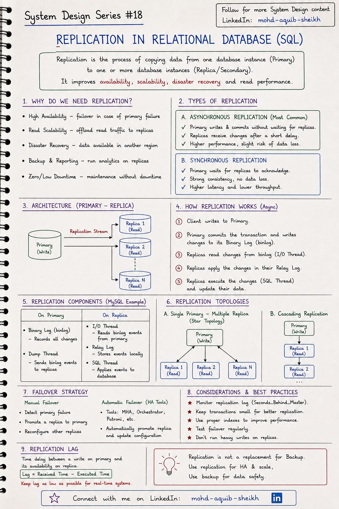
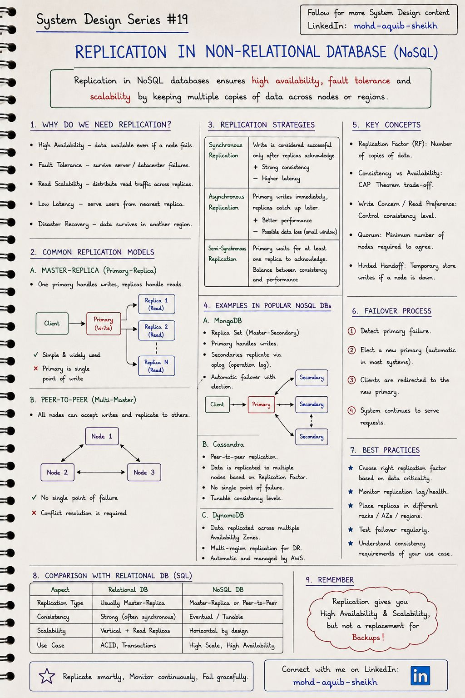
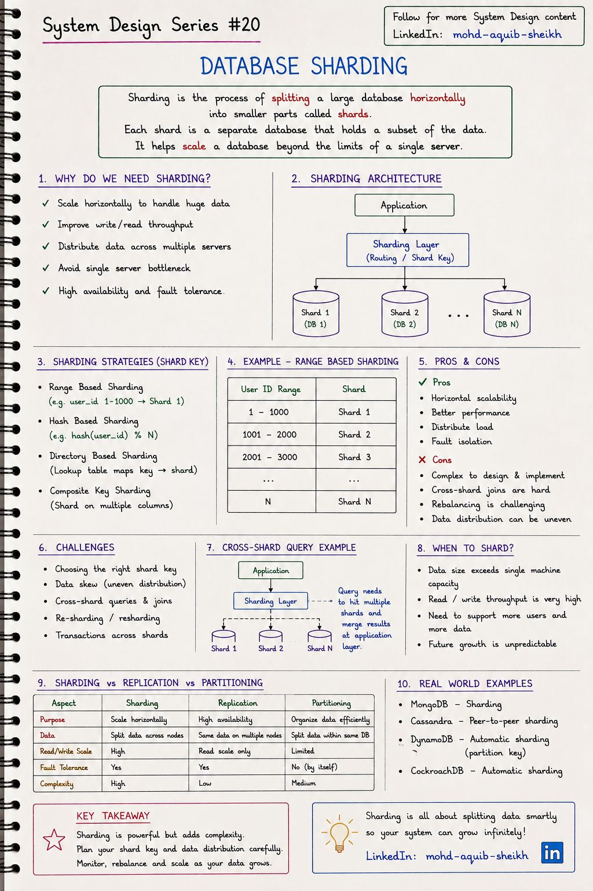
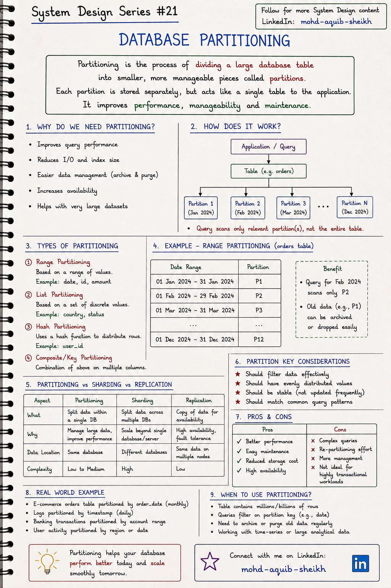
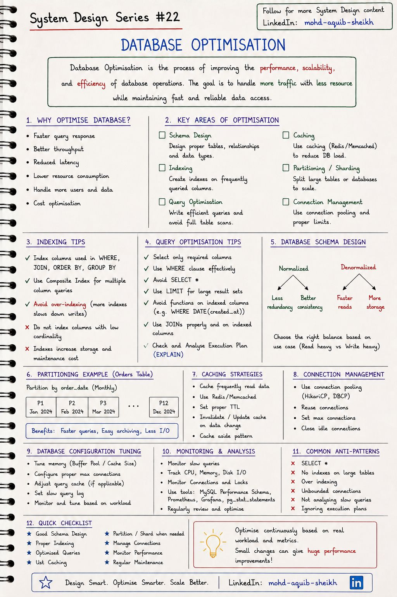

Масштабирование базы данных
База данных — слой, который труднее всего масштабировать, потому что у неё есть состояние. Инструментов три: копировать данные (репликация), делить их между серверами (шардирование) и делить внутри одного сервера (партиционирование). Но начинать нужно с четвёртого — оптимизации.
8.1Репликация в реляционных базах#18
Репликация — непрерывное копирование данных с основного узла (primary) на один или несколько вторичных (replica). Записи идут на primary, чтение можно распределить по репликам. Она даёт доступность (есть на кого переключиться), масштабирование чтения и копию в другом регионе на случай катастрофы.


| Асинхронная | Полусинхронная | Синхронная | |
|---|---|---|---|
| Primary подтверждает запись | Сразу, не дожидаясь реплик | Когда хотя бы одна реплика получила изменение | Когда реплики подтвердили |
| Потеря данных при отказе primary | Возможна (последние транзакции) | Маловероятна | Нет |
| Задержка записи | Минимальная | +1 сетевой обмен | Определяется самой медленной репликой |
| Если реплика недоступна | Primary работает | Обычно откат к асинхронной | Запись останавливается |
Как это работает (на примере MySQL с конспекта): primary фиксирует транзакцию и записывает изменения в бинарный журнал (binlog) → поток ввода-вывода реплики читает binlog и сохраняет его в локальный relay log → SQL-поток реплики применяет изменения. В PostgreSQL принцип тот же, детали другие: реплики получают поток журнала упреждающей записи (WAL).
@Transactional(readOnly = true) + AbstractRoutingDataSource.
Переключение при отказе (failover)
- Обнаружить отказ primary — и не спутать его с временной недоступностью сети.
- Выбрать реплику с наименьшим отставанием и повысить её до primary.
- Перенастроить остальные реплики и перенаправить клиентов.
- Не дать старому primary «ожить» и принимать записи — иначе split-brain: два узла считают себя главными, данные расходятся. Для этого нужен кворум и изоляция старого узла (fencing).
- Среди инструментов автоматического переключения конспект перечисляет «MHA, Orchestrator, Patroni» в разделе про MySQL. MHA и Orchestrator — для MySQL, а Patroni — для PostgreSQL.
- Метрика
Seconds_Behind_Masterв современных версиях MySQL называетсяSeconds_Behind_Source; в PostgreSQL отставание смотрят вpg_stat_replication. - Финальная мысль конспекта верна и важна: репликация — не резервная копия.
DROP TABLEили ошибочныйUPDATEбезWHEREреплицируется за миллисекунды на все узлы. От человеческих ошибок спасают только бэкапы с возможностью восстановления на момент времени (PITR).
8.2Репликация в NoSQL#19
В NoSQL-базах репликация — не надстройка, а часть архитектуры. К модели «один ведущий» добавляется peer-to-peer (без ведущего): любой узел принимает записи, а согласованность регулируется кворумами.


Один ведущий (MongoDB)
- Replica set: primary принимает записи, secondaries повторяют журнал операций (oplog).
- При отказе — автоматические выборы нового primary.
- Просто рассуждать: конфликтов записи нет.
- Ведущий — узкое место для записи.
Без ведущего (Cassandra, DynamoDB)
- Любой узел принимает запись и рассылает её на RF узлов.
- Нет единой точки отказа и выборов.
- Запись доступна, пока жив кворум.
- Нужно разрешать конфликты одновременных записей.
Кворумы: настраиваемая согласованность
Пусть N — число копий (replication factor), W — сколько узлов должны подтвердить запись, R — сколько узлов опрашивается при чтении.
| Настройка (N = 3) | Свойство |
|---|---|
W + R > N, например W=2, R=2 | Множества узлов записи и чтения пересекаются — чтение увидит последнюю запись. Выдерживает отказ одного узла. |
| W=1, R=1 | Максимальная скорость и доступность, чтение может быть устаревшим |
| W=3, R=1 | Быстрое чтение, но запись останавливается при отказе любого узла |
В Cassandra это уровни согласованности ONE / QUORUM / ALL, задаваемые на каждый запрос; в MongoDB — writeConcern (majority) и readPreference.
- Hinted handoff — если узел-получатель недоступен, соседний временно сохраняет запись «с подсказкой» и передаёт её, когда тот вернётся.
- Read repair и anti-entropy — при чтении обнаруженные расхождения исправляются; фоновый процесс сверяет реплики.
- Разрешение конфликтов — по метке времени (last-write-wins: просто, но при расхождении часов теряет записи) или версионными векторами с передачей конфликта приложению.
8.3Шардирование#20
Шардирование — горизонтальное разделение данных между независимыми серверами баз данных. Каждый шард хранит свою часть строк. Это единственный способ масштабировать запись за пределы одного сервера — и самый дорогой по сложности.


| Стратегия | Как выбирается шард | Плюсы | Минусы |
|---|---|---|---|
| По диапазону | user_id 1–1000 → шард 1 | Запросы по диапазону попадают в один шард | Неравномерность: новые данные и нагрузка скапливаются в последнем шарде |
| По хэшу | hash(user_id) % N | Равномерное распределение | Диапазонные запросы идут во все шарды; при изменении N переезжают почти все ключи |
| По справочнику | Таблица «ключ → шард» | Гибкость: можно перенести отдельного клиента | Справочник — дополнительный компонент и точка отказа |
| Составной ключ | Несколько колонок | Учитывает мультиарендность (tenant + id) | Сложнее маршрутизация |
hash(key) % N ломается при добавлении шарда: при переходе с 4 на 5 узлов меняется адрес примерно 80% ключей. Consistent hashing располагает и ключи, и узлы на кольце хэшей; ключ принадлежит ближайшему по часовой стрелке узлу. Добавление узла перемещает только ~1/N ключей. На этом построены Cassandra, DynamoDB и клиентское распределение по кэш-серверам. Родственный приём — фиксированное число логических слотов, которые перераспределяются между узлами: 16 384 слота в Redis Cluster (тема 10).
Выбор ключа шардирования — главное решение
- Высокая кардинальность и равномерность: значений много, ни одно не доминирует. Ключ «страна» создаст гигантский шард и десяток пустых.
- Присутствует в большинстве запросов: запрос с ключом идёт в один шард; без ключа — во все с последующим слиянием (scatter-gather), и работает со скоростью самого медленного.
- Данные, которые нужны вместе, лежат вместе: заказы пользователя — на шарде пользователя. Тогда транзакции и соединения остаются локальными.
- Не меняется: смена ключа означает переезд строки.
Что теряется: соединения и транзакции между шардами (нужны саги или двухфазная фиксация), глобальные уникальные ограничения и автоинкремент (нужны UUID или идентификаторы вида Snowflake), простота изменения схемы и бэкапа.
8.4Партиционирование#21
Партиционирование делит одну большую таблицу на части внутри одной базы. Для приложения таблица остаётся единой, но запрос с условием по ключу партиционирования читает только нужные части, а устаревшие данные удаляются мгновенно — отсоединением партиции.


| Партиционирование | Шардирование | Репликация | |
|---|---|---|---|
| Что делает | Делит данные внутри одной БД | Делит данные между серверами | Копирует одни и те же данные |
| Зачем | Управляемость и скорость запросов к большой таблице | Масштаб записи и объёма за пределы сервера | Доступность и масштаб чтения |
| Масштабирует запись | Нет | Да | Нет |
| Переживает отказ сервера | Нет | Частично (страдает один шард) | Да |
| Сложность | Низкая–средняя | Высокая | Низкая |
Три инструмента комбинируют: шардированная система, где каждый шард реплицируется, а большие таблицы внутри шарда партиционированы по дате.
CREATE TABLE orders (
id BIGINT, order_date DATE NOT NULL, amount NUMERIC,
PRIMARY KEY (id, order_date) -- ключ партиционирования обязан входить в PK
) PARTITION BY RANGE (order_date);
CREATE TABLE orders_2024_02 PARTITION OF orders
FOR VALUES FROM ('2024-02-01') TO ('2024-03-01');
-- запрос за февраль прочитает только orders_2024_02 (partition pruning)
-- удалить старый месяц: DROP TABLE orders_2023_01 — мгновенно, без DELETE и раздувания таблицы
- Выгода есть только при условии по ключу партиционирования. Запрос без него обойдёт все партиции и окажется медленнее, чем по одной таблице с индексом.
- «High availability» и «reduced storage cost» в списке плюсов — с оговорками. Партиции лежат на том же сервере: отказ сервера выводит из строя все. Экономия на хранении появляется, только если старые партиции вынесены на дешёвые диски или сжаты.
- Терминология. В литературе «partitioning» часто означает любое разделение данных, включая шардирование («горизонтальное партиционирование между узлами»). Конспект использует узкое значение — разделение внутри одной базы. Есть ещё вертикальное партиционирование: вынос редко используемых или больших колонок в отдельную таблицу.
8.5Оптимизация базы данных#22
Прежде чем добавлять серверы, стоит убедиться, что имеющийся используется эффективно. Один недостающий индекс способен дать ускорение в тысячи раз — больше, чем любое масштабирование.


Индексы
- Индексируйте колонки из
WHERE,JOIN,ORDER BY. - Составной индекс
(a, b, c)работает для условий поa, поa, b, поa, b, c— но не по одномуb(правило левого префикса). - Покрывающий индекс содержит все нужные запросу колонки — таблица не читается вовсе.
- Каждый индекс замедляет запись и занимает место.
- Низкая кардинальность (пол, статус из трёх значений) — индекс почти бесполезен.
Запросы
- Только нужные колонки, не
SELECT *. - Функция над колонкой отключает индекс: вместо
WHERE DATE(created_at) = …пишите диапазон поcreated_at. LIKE '%abc'индекс не использует,LIKE 'abc%'— использует.- Смотрите план:
EXPLAIN (ANALYZE, BUFFERS). - Ищите полное сканирование больших таблиц и неверные оценки числа строк.
order.getCustomer() — Hibernate выполнил ещё 100 запросов. Каждый быстрый, вместе — секунды. Лечится JOIN FETCH, @EntityGraph или пакетной загрузкой (@BatchSize). Обнаруживается подсчётом запросов на один HTTP-запрос, а не поиском медленных запросов: медленных среди них нет.
- Нормализация и денормализация. Нормализованная схема — меньше дублирования и проще целостность; денормализованная — быстрее чтение ценой места и сложности обновления. Начинают с нормализованной, денормализуют точечно под измеренную проблему.
- Пул соединений. Соединение с базой дорогое (процесс или поток на сервере, память). Используйте HikariCP и держите пул небольшим: рекомендация авторов — порядка «число ядер × 2». Пул из 200 соединений на сервер с 8 ядрами не ускоряет, а замедляет базу из-за переключения контекста и конкуренции за блокировки.
- Конфигурация. Память под кэш страниц (
shared_buffers,innodb_buffer_pool_size), журнал медленных запросов. Упомянутый на конспекте query cache в MySQL 8.0 удалён. - Мониторинг.
pg_stat_statementsи Performance Schema показывают, какие запросы суммарно потребляют больше всего времени — оптимизируют их, а не самые медленные по отдельности.
8.6Интерактив: выбор ключа шардирования
8.7Самопроверка
Чем партиционирование отличается от шардирования?
- Ничем
- Партиции — части таблицы внутри одного сервера БД; шарды — части данных на разных серверах
- Партиционирование только для NoSQL
- Шардирование не требует ключа
После записи пользователь читает с реплики и не видит своих изменений. Почему?
- Реплика сломана
- Транзакция не закоммичена
- Асинхронная репликация: реплика применяет журнал с задержкой
- Неверный уровень изоляции
Запрос использует индекс по (status, created_at). Какой из условий индекс НЕ поможет выполнить эффективно?
- WHERE created_at > … (без условия на status)
- WHERE status = 'NEW'
- WHERE status = 'NEW' AND created_at > …
- WHERE status = 'NEW' ORDER BY created_at
Чем репликация, партиционирование и шардирование отличаются по решаемой задаче?
Репликация копирует одни и те же данные на несколько узлов — доступность и масштаб чтения. Партиционирование делит таблицу внутри одной базы — управляемость и скорость запросов по ключу. Шардирование делит данные между серверами — масштаб записи и объёма. Запись масштабирует только шардирование.
Почему асинхронная репликация может потерять подтверждённую транзакцию?
Primary подтверждает клиенту фиксацию до того, как изменение дошло до реплик. Если primary выходит из строя в этот момент, а реплику повышают до primary, транзакции, не успевшие передаться, пропадают. Синхронная или полусинхронная репликация закрывает это окно ценой задержки записи.
N = 3, W = 1, R = 1. Что с согласованностью и доступностью?
W + R = 2, не больше N — множества записи и чтения могут не пересечься, чтение может вернуть устаревшее значение. Зато система остаётся доступной для записи и чтения, пока жив хотя бы один узел. Для строгого чтения нужно, например, W=2 и R=2.
Таблицу заказов шардировали по order_id. Какой частый запрос станет проблемой?
«Все заказы пользователя»: без ключа шардирования в условии запрос уйдёт во все шарды и будет сливать результаты. Если основной шаблон доступа — по пользователю, шардировать нужно по user_id: заказы пользователя окажутся на одном шарде. Ключ выбирают по самому частому запросу.
Есть индекс (status, created_at). Используется ли он для WHERE created_at > :d?
Эффективно — нет: условие не включает левую колонку индекса. Он подходит для WHERE status = ? AND created_at > ? или для одного status. Порядок колонок выбирают так: сначала те, что сравниваются на равенство, затем колонка диапазона или сортировки.